1What it is
IProduction runs the day-to-day work of a manufacturer that makes goods to order, such as sports gloves and balls, often for export customers. Each customer company gets its own installation and its own database, so there is no mixing of data between companies.
Everything that happens in the business is a document: a sales order, a goods receipt, a production card, a delivery, an invoice, a payment. When a document is posted, the system updates stock and the accounts for you, in one step that either fully succeeds or changes nothing.
Sales
Customers, sales orders, planning, deliveries with packing lists, invoices, returns and credit notes.
Purchasing
Vendors, purchase orders, goods receipts with rejected quantities, vendor bills and purchase returns.
Production
PTCs that follow each batch through its route of stages, contractor jobs, material processing, rejections and wage work.
Inventory
Stock by item, stage, status, location and lot; reservations for orders; counts and adjustments.
Finance
Cash and bank accounts in any currency, receipts, payments, conversions, transfers, expenses, journal vouchers, ledgers and assets.
HR and payroll
Employees and contractors, attendance, loans, salary advances and a monthly payroll with payslips.
Reports
Over 30 reports, from trial balance and profit and loss to order cost, yield, idle stock and daily activity.
Settings
Company details, users and roles, units, currencies, stages, lookups, document numbering, approvals and opening balances.
2How it works
Six ideas explain nearly every screen. Once these make sense, the rest of the system behaves the way you would expect.
Every document has the same life
A draft can be edited freely. Approving locks it. Posting applies its effects to stock and accounts. A document can be cancelled only while nothing has been posted. Some documents show their progress instead of "Posted", for example Partly Received, Dispatched or Paid.
Posted documents are never edited or deleted. A mistake is corrected with a new document that reverses it: a return, a credit note, a stock adjustment or a journal voucher. Cancelling, overriding and reversing always ask for a reason, which is kept in the document's history.
Stock is a ledger
Every change in stock is a movement row that is never edited. Stock is held by item, stage, status (available, in production, rejected, returned), location and lot. Only available stock can be reserved or issued.
Accounts are double-entry
Posting writes balanced journals automatically: debits always equal credits. Ledgers and balances are calculated from journals, never typed in.
Customers keep their currency
A USD customer's orders, invoices, ledger and receipts stay in USD; no exchange rate is guessed. PKR value appears only when you record a currency conversion and type the PKR actually received. Costs are always in PKR.
Numbers come from sequences
Each document type has its own prefix, such as SO-26-0001 for the first sales order of 2026. Prefixes and next numbers can be changed in Settings › Numbering.
Permissions decide what you see
Menu links, buttons and pages are hidden from users without the permission. Cost, profit, salary and bank balance figures each have their own permission.
3Getting started
Install
You need PHP 8.3 or later, Composer, Node.js and MySQL 8. Create a database called iproduction, copy .env.example to .env with your database details, then run:
composer setupThis installs dependencies, migrates, seeds the Super Admin, currencies and permissions, and builds the front end. Start everything with composer dev and open http://localhost:8000. The admin password is the one in .env, or the random one the seeder prints.
Using Laravel Herd? Herd serves the PHP side at http://iproduction.test, so skip composer dev. Run npm run dev while you work (or npm run build once), and php artisan queue:work if you need exports and emails.
Load the demo company
To explore with realistic data, load the demo company after the normal seed. It is a sports goods maker in Sialkot with export customers in USD, EUR, GBP and AED, and every document in it was posted through the real system, so stock and the books agree.
php artisan db:seed --class=DemoDataSeederIt refuses to run in production and does nothing if it was loaded before. It adds one user per role, all with the password Demo@12345:
| Sign in as | Role | What they do |
|---|---|---|
| manager@demo.test | Manager | Sees everything outside Settings, approves documents, reads all reports including cost, profit and salary. |
| sales@demo.test | Sales | Customers, sales orders, planning, deliveries, packing, invoices, returns and credit notes. |
| purchase@demo.test | Purchase | Vendors, purchase orders and purchase returns. |
| store@demo.test | Store | Stock, lots, reservations, goods receipts, production issues and stock adjustments. |
| production@demo.test | Production | PTCs, stage work on the floor, contractor jobs, material processing, rejections and wage work. |
| accountant@demo.test | Accountant | Cash and bank accounts, receipts, payments, transfers, conversions, expenses, vouchers, invoices, vendor bills, credit notes, assets, ledgers and all reports. |
| hr@demo.test | HR | Employees, attendance, loans, advances and payroll. |
Staff roles prepare documents; approving them is for the Manager and the Super Admin. The Super Admin can do everything, including users, roles and settings. Roles can be changed in Settings › Roles.
4Finding your way
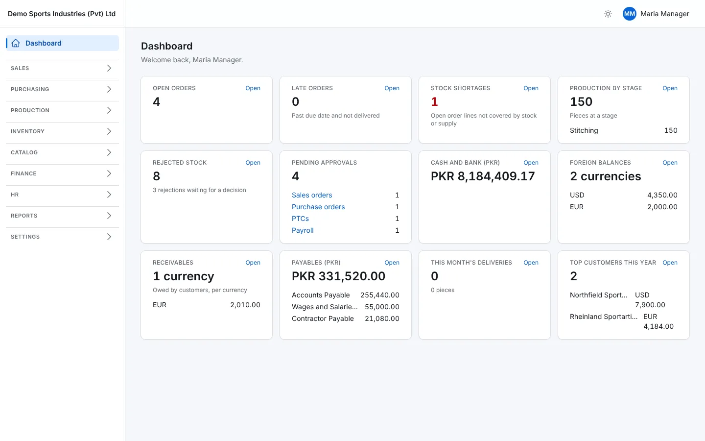
- Sidebar. Areas are grouped as Sales, Purchasing, Production, Inventory, Catalog, Finance, HR, Reports and Settings. Groups open and close and remember their state. You only see links you have permission for.
- Lists. Every list has a search box (press / to jump to it), filters, a date range, sortable columns, paging and an Export button for Excel or CSV.
- Document pages. The top shows the number, the party and a status badge, with the buttons the document allows next (Approve, Post, Cancel, Print). The side shows details, linked documents, attachments, notes and the full history of who changed what.
- Forms. Press Ctrl + S (⌘ + S on a Mac) to save. Dates are entered and shown as dd-mm-yyyy.
- Printing. Orders, receipts, delivery notes, packing lists, invoices, PTC cards, payslips and reports print on their own pages; add
?pdf=1to download a PDF. - Theme. The icon at the top right picks Light, Dim, Dark, or System to follow your computer.
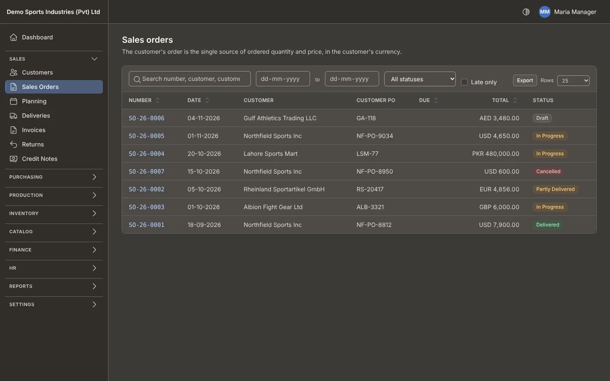
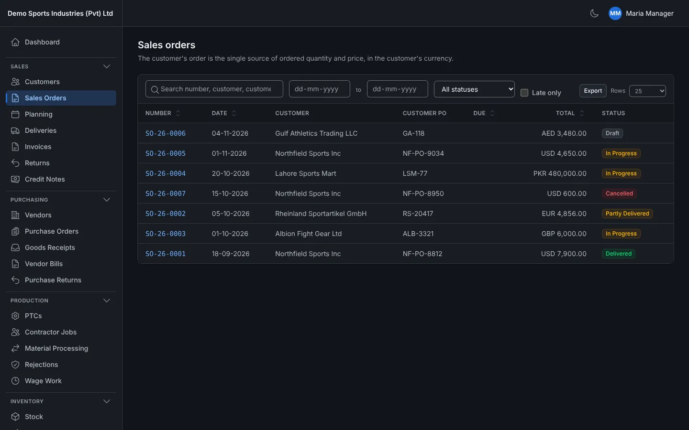
5Walkthrough: order to cash
This follows one export order through the whole system, in the order the work happens. Each step names who usually does it, where to find it, and what changes when it is posted. The demo company has a record at each stage, so you can open it and look.
-
Take the customer's order
Pick the customer; the currency comes from the customer and cannot be changed on the order. Add a line per item variant with quantity, unit price and an optional tax rate. The lines grid runs in the browser, so long orders stay fast, and the whole order is sent once when you save.
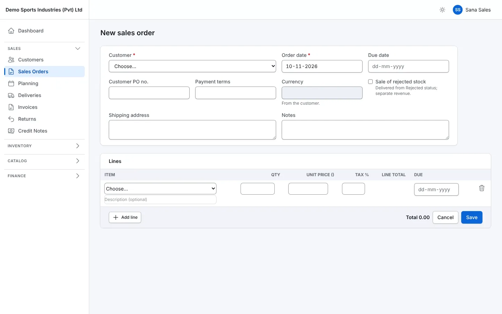
A new order is a draft until it is approved. A manager then approves it. Approval locks the order against edits; a manager can return it to draft with a reason.
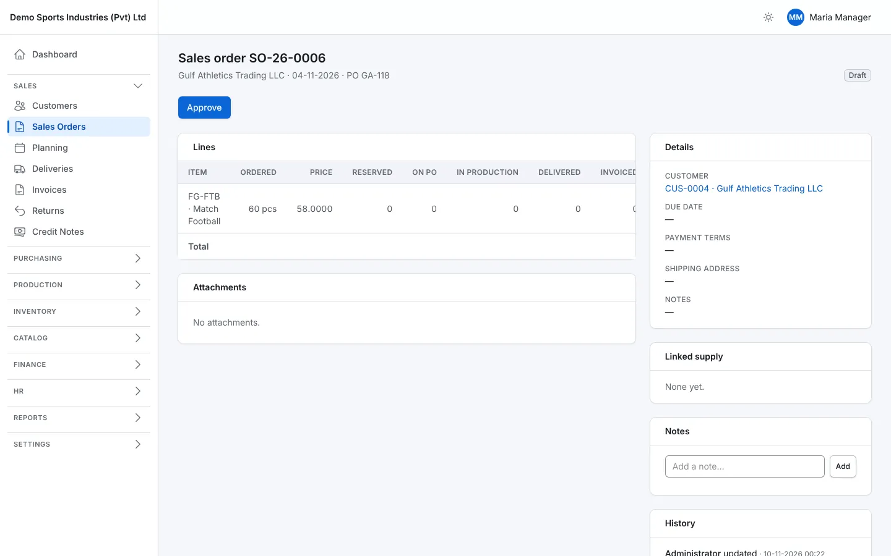
Draft order SO-26-0006 waiting for approval. Approving changes nothing in stock or the books. The order is now open for planning, production and delivery.
-
Plan how to supply it
Planning lists every open order line with what is required, what is free in stock, already reserved, on order and in production, and the shortfall. For each line it says what is blocking it and what to do next: reserve free stock, buy, or make.
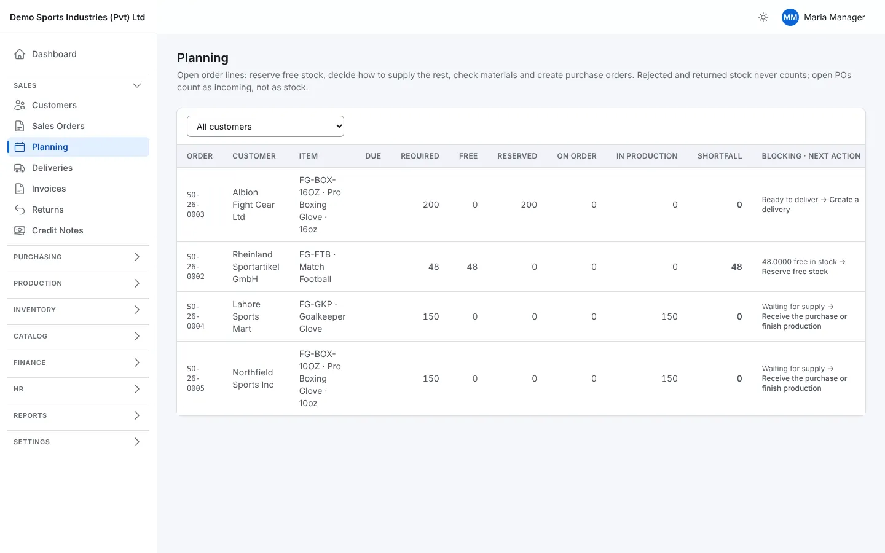
Rheinland's order SO-26-0002 has 48 footballs free in stock; the next action is to reserve them. Reserving holds available stock for that order line so no other order can take it. Purchase orders and PTCs created from planning are linked to the line; planning counts them as incoming, never as stock.
-
Buy and receive materials
A purchase order goes through draft, approval and Mark sent. When the goods arrive, the store records a goods receipt against it: the quantity received, how much was accepted, and how much was rejected, with what to do with the rejects (return to the vendor or keep). A small extra within the tolerance in settings is accepted as is; anything above it needs a decision on the extra quantity and the override permission.
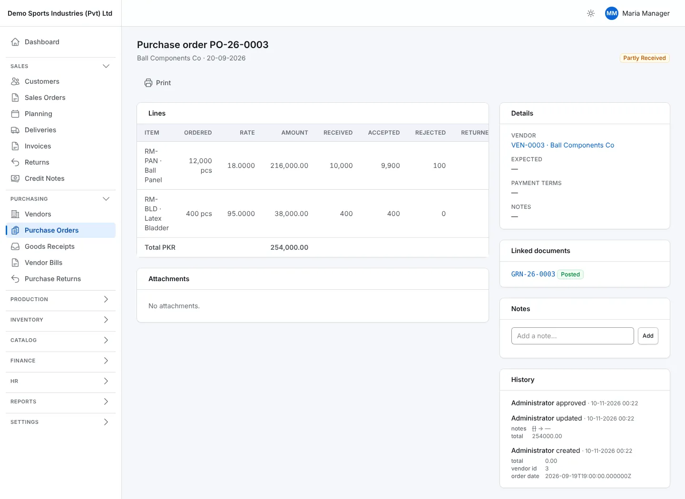
PO-26-0003 is Partly Received: 9,900 of 12,000 panels accepted so far. 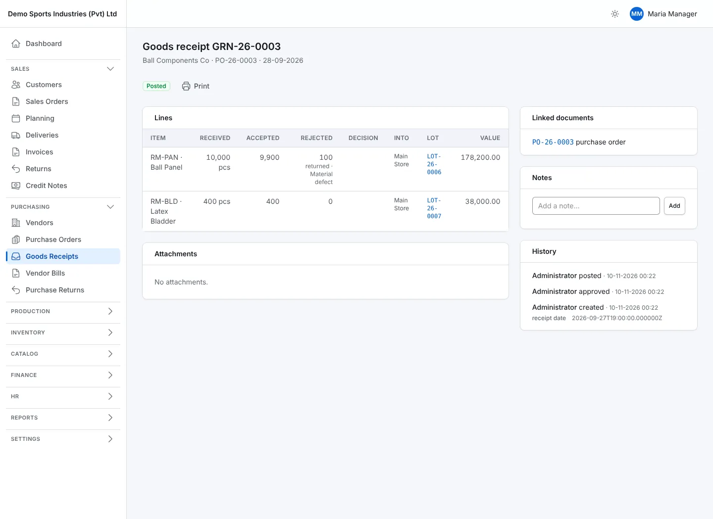
Each accepted line becomes a lot, such as LOT-26-0006, carrying its unit cost. Posting a goods receipt adds the accepted goods to stock as new lots at the order rate, and posts Dr Inventory / Cr Accounts Payable. Goods returned at the gate never enter stock. Goods for an order line linked to this purchase order are reserved to it at once.
The vendor's invoice is then entered as a vendor bill against the received lines, adding any tax and freight, and paid through Finance › Payments. A payment can settle several bills; anything left over stays as an advance to the vendor.
-
Make it on the shop floor
A PTC is the card that follows one batch through production. Create it for an order line or for stock, choose the item, quantity and route, then approve it. Approval copies the route's stages and the item's bill of materials onto the card, so later changes to the catalog don't affect work already started.
On the floor, record each step on the card's stage board:
- Issue material from the store to the first stage.
- Issue to a stage and receive from it, naming the employee or contractor who did the work. Wage employees and contractors are paid the stage's rate.
- Reject bad pieces with a reason, skip optional stages, and record returns and wastage.
- Release finished pieces to the store.
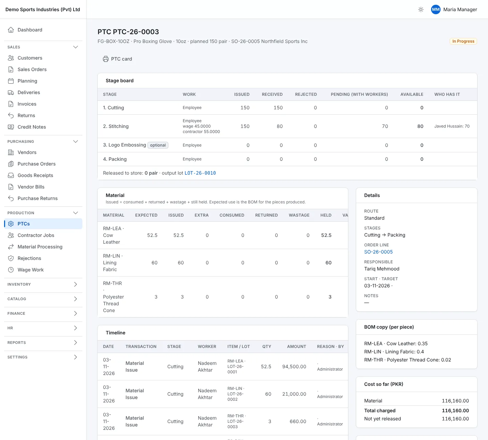
PTC-26-0003 for Northfield's 10oz gloves: cutting is done and stitching is halfway, with 70 pairs still with the stitcher. Costs collect on the card as work happens: material at lot cost, wages, contractor charges and extra work. A release moves its share of the cost onto the finished goods lot, and rejected pieces count as an allowed loss. Pieces released for an order line are reserved to it automatically.
Work sent outside goes on a contractor job instead: issue materials to the contractor, receive the finished pieces back, and the job reconciles what was issued against what was used, returned, wasted or still held.
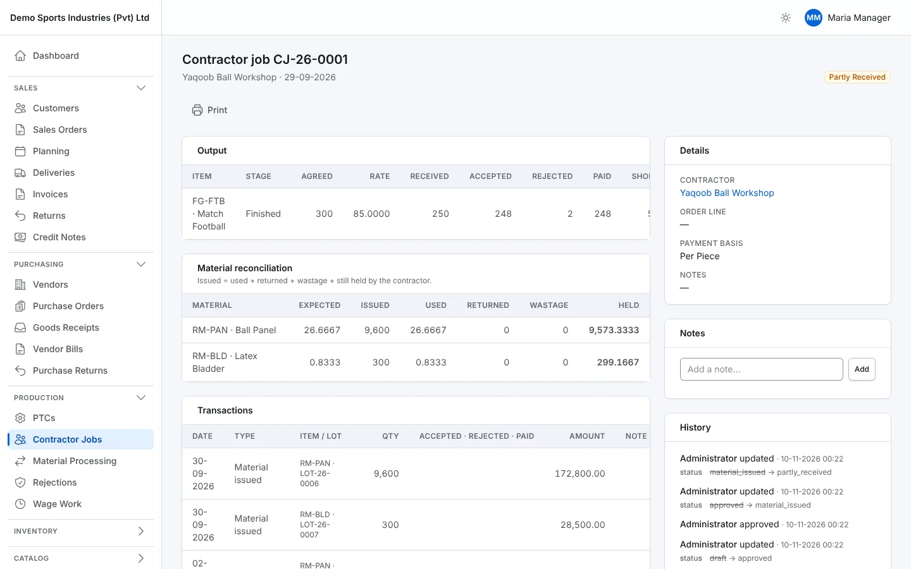
Contractor job CJ-26-0001: 250 of 300 footballs back, with material still held by the workshop. -
Pack and dispatch
Create a delivery from the customer's open order lines and save it. Then:
- Allocate picks stock for each line: a lot you choose, otherwise the order's reserved lots, otherwise the oldest free stock.
- Pack into cartons with type, size and weights; completing packing produces the packing list.
- Dispatch when the goods leave.
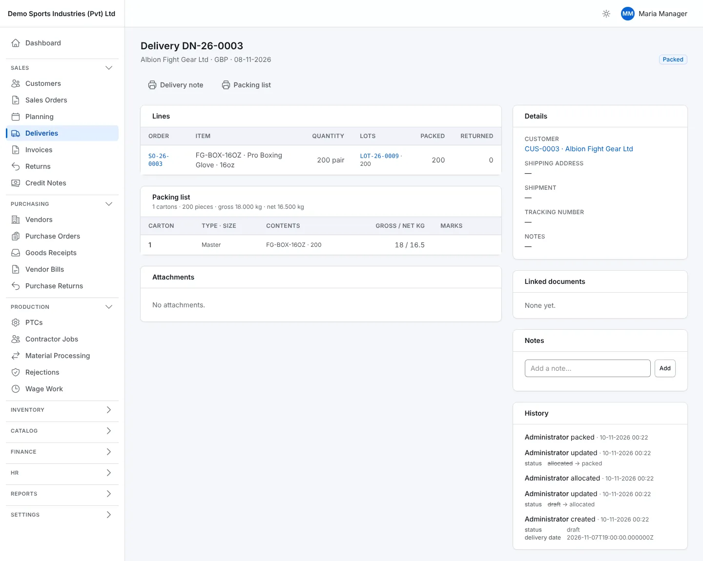
DN-26-0003 is Packed and ready to dispatch, with its packing list available to print. Dispatch removes the goods from stock and posts the cost of goods sold (Dr COGS / Cr Inventory) at the lots' cost. The order shows the delivered quantity.
-
Invoice and collect payment
An invoice is made from dispatched delivery lines; each line can be invoiced once. Prices come from the order and can be adjusted on the invoice; tax is optional per line and defaults to none, so export invoices show no tax.
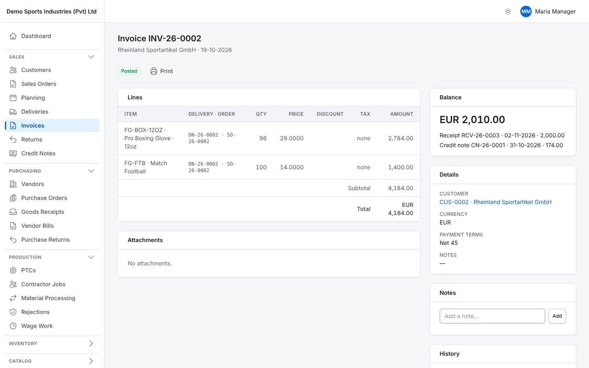
INV-26-0002: EUR 4,184 invoiced, part paid, and reduced by a credit note for returned pairs. Posting the invoice posts Dr Accounts Receivable / Cr Sales, plus Taxes Payable when tax applies, in the customer's currency.
When money arrives, record a receipt in the customer's currency into a bank account of that currency. Bank charges and other deductions are entered on the receipt, so the amount cleared equals the deductions plus the net received. Allocate it to invoices; anything left is a customer advance that can be applied to a later invoice.
Finally, when foreign currency is converted, record a currency conversion and type the PKR actually credited by the bank. That is the only point where foreign money becomes PKR value in the books.
If goods come back, record a delivery return: the goods go to Returned status, then are restocked or sent to rejections. Issue a credit note to reduce what the customer owes.
6Other areas
Inventory
Inventory › Stock shows quantities by item with idle, in production, rejected, returned, reserved and free columns, and tabs by stage and by location and lot. Stock Movements is the full ledger, Lots traces where each lot came from and went, and Reservations shows what is held for which order. Stock Adjustments record count differences; posting one writes the movement and the matching journal.
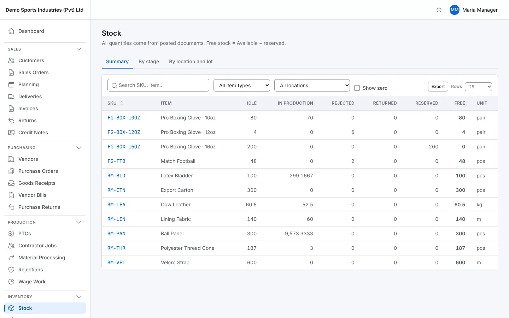
Catalog
Items are raw materials, components or finished goods, each with a stock unit. Attributes such as weight or size generate variants; each variant has its own SKU, like FG-BOX-12OZ. Routes list the stages an item goes through, with optional stages and wage and contractor rates. BOMs list the materials per piece, are versioned, and must be approved before use.
Finance
Accounts lists the cash and bank accounts with balances in their own currencies. Besides receipts and payments, Finance covers transfers between accounts of the same currency, currency conversions, expenses (paid now, or owed to a vendor and paid later), journal vouchers for anything else (optionally deducted through payroll), ledgers for any customer, vendor, employee, contractor or account, the automatic journals, the chart of accounts, and fixed assets.
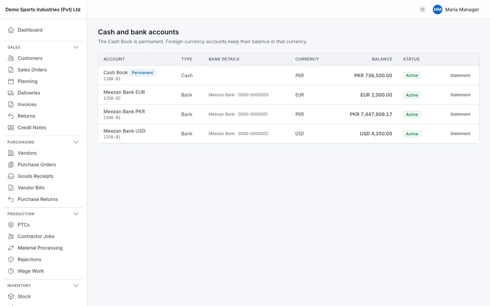
HR and payroll
Employees are salaried or paid by wage. Enter attendance for the month (working days, leaves, late hours, overtime), then create the month's payroll. Salaried staff get salary plus overtime, minus unpaid days and late hours; wage employees get their approved wage work. Allowances, fines, loan installments, advances and any amount brought forward apply to both. Nothing changes until the payroll is approved and posted; after that, payments settle each employee's line and payslips can be printed.
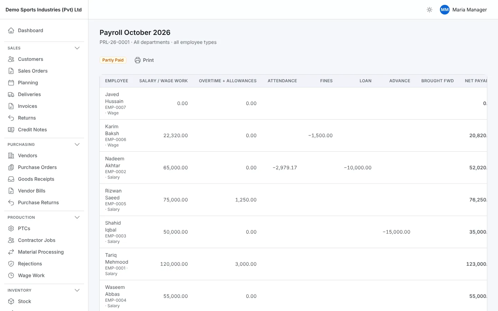
Reports
Reports are grouped by area and read posted documents only. Each one has filters, prints, and exports to Excel or CSV. Reports showing cost, salary or profit need their own permission. Order cost shows the direct cost of an order; profit uses a reference PKR value and posts nothing.
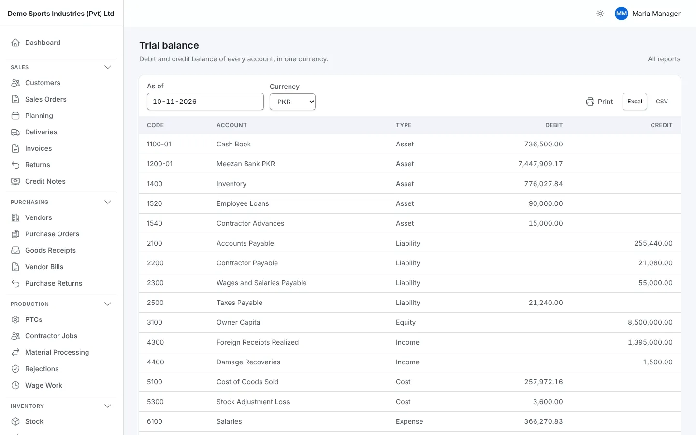
Settings
Company holds the name, logo, tax numbers and tolerances. The period lock date (nothing can be posted on or before it) has its own page. Users and Roles control access. Units, Currencies, Stages and Lookups hold the lists used in forms. Numbering sets each document's prefix and next number, Approvals sets which document types need approval, and Audit Log shows every change. Opening Balances is used once, at go-live.
7Going live
Moving a company from its old system follows a fixed order, described in full in docs/GO-LIVE.md:
- Set up the server, company settings, master data and users.
- Check backups work:
php artisan db:verify-backuprestores the latest backup into a scratch database and compares it. - Pick a month end as the cut-over date and print the old system's closing reports as control totals.
- In Settings › Opening Balances, download each CSV template, fill it in and upload it. Twelve types are available, from cash and stock to running PTCs. The preview flags every row with an error, and a file with errors cannot be posted.
- Check Reports › Go-live › Cutover report shows every type as matching the control totals.
- Lock go-live. No more opening documents can be loaded, and nothing can be posted on or before the cut-over date.
8For developers
The code is a modular Laravel application. Each business area is a module in app/Modules/{Name} with its own models, services, Livewire screens, migrations, views and routes; Core is the reference module. The rules every module follows are in AGENTS.md; the most important ones:
- Money and quantities are
DECIMALcolumns calculated withApp\Support\Decimal, never floats. - Only
StockLedgerwrites stock and onlyJournalPosterwrites journals, always inside the document's posting transaction. - Posting goes through
DocumentWorkflow::post(), which locks the document, prevents double posting, and enforces approvals and the period lock. - Modules talk through service classes and keyed hooks, never by writing to each other's tables.
- Screens use the shared Blade components and semantic colours (
bg-surface,text-mutedand so on), which work in every theme.
composer dev # server, queue, logs and Vite
composer test # Pest tests on MySQL (database iproduction_test)
composer check # code style, static analysis and tests, as in CI
composer lint # fix code styleTests run on MySQL, not SQLite, so decimals, locking and unique indexes behave as in production. One test loads the demo company and opens every screen and printout for every record, which catches screens that break only with real data.
9Glossary
- Allocation
- On a delivery: the lots picked for each line. In planning: a link between an order line and its supply (a purchase order line or production).
- BOM
- Bill of materials: the materials and quantities needed for one piece of an item.
- COGS
- Cost of goods sold, posted when a delivery is dispatched.
- Contractor job
- Work sent to an outside contractor, with materials issued and finished pieces received back.
- Free stock
- Available stock that is not reserved for any order.
- GRN
- Goods receipt note: the record of goods arriving against a purchase order.
- Lot
- A batch of stock from one source, such as a receipt or a PTC, carrying its own unit cost.
- Period lock
- A date on or before which nothing can be posted, set after month end and at go-live.
- Posting
- The step that applies a document's effects to stock and accounts. It happens once and cannot be undone except by a reversing document.
- PTC
- The production card for one batch: its route of stages, materials, workers, rejections, cost and output lot.
- Reservation
- Available stock held for a specific order line.
- Route
- The ordered list of stages an item passes through, such as Cutting, Stitching, Logo Embossing and Packing.
- Stage
- One step of production. Stock in production is held by stage.
- Wage work
- Pieces done by wage employees at a stage, approved before they are paid through payroll.